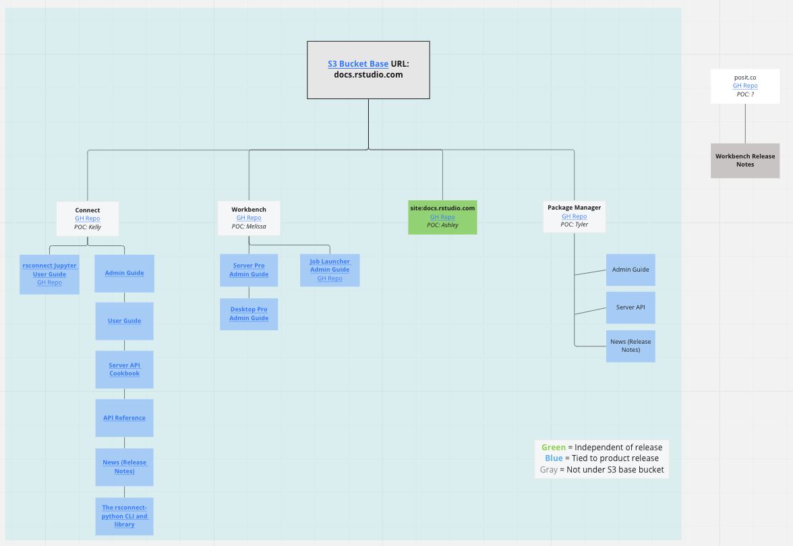

Pro Product Docs Overview
This page is a partial duplicate of the GitHub docs.rstudio.com/README.
docs.rstudio.com
Acts as a “home base” for new professional product users and professional product documentation focused on initial installations, configurations, and integrations.
Documentation Build
The documentation is stored and hosted in an Amazon S3 bucket named docs.rstudio.com, which is associated with a CloudFront CDN distribution.
docs.rstudio.com is the index at the root of the directories that make up the docs.rstudio.com Amazon S3 bucket. Since docs.rstudio.com/index.html is at the root of these directories, this is the page that displays when you navigate to the docs.rstudio.com URL.
Feel free to take a look at the structure of the docs S3 bucket.
The docs.rstudio.com S3 bucket also hosts the directories for the rest of our professional product documentation:
- Workbench guides
- Connect guides
- Package Manager guides and
- Other content that you access with the base URL of docs.rstudio.com.
The docs.rstudio.com/rsc/installation page’s source code lives within the main docs.rstudio.com index directory structure. The source code for this page lives at: https://github.com/rstudio/docs.rstudio.com.
However, docs.rstudio.com/connect/admin does NOT live within the main docs.rstudio.com directory structure. The source code is available at: https://github.com/rstudio/connect.
Essentially, we “drop” the professional product documentation files (HTML/JS/CSS) into subdirectories, like /connect.
How it builds
Jenkins or a GitHub (GH) action builds the documentation at the source and then drops the finished HTML/JS/CSS into a specific directory of the S3 bucket, for example, /connect.
Now, the finished documentation is available via the docs.rstudio.com/connect URL even though the source code of the documentation does not live in the docs.rstudio.com GH repository.
Pro product doc source code
For a list of Professional Products Guides, documentation URLs, and source code, please see the docs.rstudio.com/README
Product Doc Site Map
Click image to zoom.

Here is a link to the source of the site map shown above (this doesn’t include all sources within the docs.rstudio S3 bucket):
Misc
Doc Resources
- Planning Guide
- Documentation Style Guide
- Formatting & Syntax
- Product Release Checklist
Seeking another RStudio doc?
You may be looking for documentation that lives outside of the docs.rstudio.com S3 bucket:
| URL | Source Code |
|---|---|
| rstudio.com | https://github.com/rstudio/rstudio.com |
| db.rstudio.com | https://github.com/rstudio/db.rstudio.com |
| solutions.rstudio.com | https://github.com/rstudio/solutions.rstudio.com |
| shinyapps.io user guide | https://github.com/rstudio/shinyapps-users-guide |